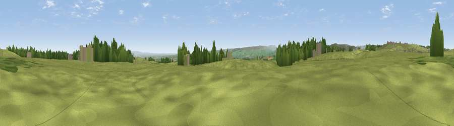

Viewpoint near Catterick Garrison
#21652 in England · top 53% of its area beats it · near Catterick GarrisonThe view, rendered

A 360° render of this exact spot computed from the terrain model, tree cover and land cover — summer colours, afternoon light, calibrated against photographs of famous viewpoints. Real trees, hedges and buildings will differ in detail.
The panorama
Grey silhouette: terrain skyline in each direction (720 bearings, Earth curvature and refraction included). Dashed green: skyline with trees (+15 m) and buildings (+8 m) as obstacles. Blue strip: how far the ground is visible on each bearing.
Where the view opens
Wedge length = distance to the farthest visible ground on that bearing (vegetation-aware). Rings at 10, 25 and 50 km.
What fills the view
75% grassland · 12% woodland · 11% cropland · 2% built-up
Angular shares of the visible panorama (visual magnitude), not map area. Landscape diversity 0.35 (0–1 Shannon).
Key numbers
More beautiful places nearby
The staircase of upgrades: each row has a higher view potential than everything closer. Driving times are estimates from straight-line distance, calibrated against real road routing — check an actual route before setting out.
| Place | Direction | Drive | Score |
|---|---|---|---|
| Viewpoint near Catterick Garrison | E · 1 km | ~4 min | 59.8 |
| Barden Fell | NW · 2 km | ~4 min | 60.0 |
| Viewpoint near Hudswell | NNW · 2 km | ~5 min | 60.6 |
| Viewpoint near Hunton | ESE · 3 km | ~7 min | 69.8 |
| Whit Fell | W · 6 km | ~14 min | 70.7 |
| Viewpoint near Gilling West | N · 10 km | ~19 min | 72.3 |
| Viewpoint near East Witton | S · 10 km | ~19 min | 74.4 |
| Viewpoint near East Witton | S · 10 km | ~20 min | 77.8 |
54.35054, -1.76881 · source: screening · position refined by local search. Computed location — check access rights before visiting.